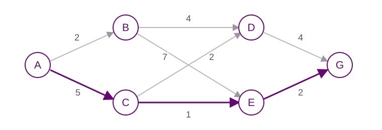

Session 01 / Dynamic programming
Sequential decisions and dynamic programming
States, actions, policies and long-term objectives. Solve a small route-planning problem by backward induction.
Learning objectives
- Model a sequential decision problem using states, actions, transitions and costs.
- Distinguish a policy from a fixed action sequence.
- Explain backward induction and the connection between DP and RL.
Before class
Bertsekas, Dynamic Programming and Optimal Control, Volume I, Chapter 1; Sutton and Barto, Chapter 1.
Materials
Three sections, one running example
| Time | Focus | Activity |
|---|---|---|
| 09:50–10:35 | Why sequential decisions? | Course introduction, delayed consequences, and a small route-planning challenge. |
| 10:40–11:25 | Model the problem | Identify states, actions, transitions, costs, policies and the horizon. Try a short inventory modeling exercise. |
| 11:30–12:15 | Reason backward | Compute remaining costs, express Bellman's idea, and connect planning to RL and language models. |
A route-planning example
Find the lowest-cost route from A to G. Each edge cost is known, and every move goes to the next layer.

The cheapest immediate move produces A → B → D → G, with total cost 10. Backward induction finds A → C → E → G, with total cost 8.
Work through the backward calculation
- At the destination: J(G) = 0.
- One move remaining: J(D) = 4 and J(E) = 2.
- J(B) = min(4 + 4, 7 + 2) = 8.
- J(C) = min(2 + 4, 1 + 2) = 3.
- J(A) = min(2 + 8, 5 + 3) = 8.
A policy also specifies what to do from B, even though the optimal route from A visits C.
Choose the action with the smallest immediate cost plus optimal remaining cost.
For a deterministic finite-horizon problem:
J_t(s) = min_a {c_t(s,a) + J_(t+1)(f_t(s,a))}, with terminal condition J_T(s) = g_T(s).
Connecting the ideas to language models
- State: the prompt and the generated prefix.
- Action: the next token.
- Policy: the language model's distribution over tokens.
- Reward: feedback on the completed answer, such as a preference score or a code-test result.
Appending a token is a known transition. RL is useful here because the space of possible prefixes is enormous and optimizing sequence-level rewards relies on sampled experience and approximation.
Check your understanding
- What is the difference between a policy and a route?
- Why can a locally cheap action be globally expensive?
- If the cost from E to G changes from 2 to 6, which decisions change?
- What changes when travel costs must be learned from experience?